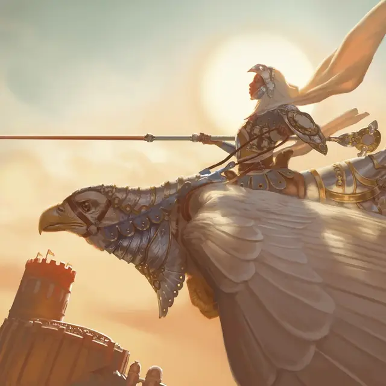

Рыцарь Элдраина
Knight of Eldraine
Маленький Гуманоид (Человек), любое мировоззрение

Класс Доспеха 20 (латы, щит)
Хиты 78 (12к8 + 24)
Скорость 30 футов
| мод | спас | ||
|---|---|---|---|
| СИЛ | 16 | +3 | +3 |
| ЛОВ | 12 | +1 | +1 |
| ТЕЛ | 14 | +2 | +4 |
| мод | спас | ||
|---|---|---|---|
| ИНТ | 13 | +1 | +1 |
| МДР | 11 | +0 | +2 |
| ХАР | 13 | +1 | +1 |
Чувства пассивное Восприятие 10
Языки Общий
Опасность 3 (700 опыта)
Бонус мастерства +2
Особенности
Рыцарская добродетель. Рыцарь обладает одной из следующих способностей, в зависимости от двора, которому он служит:
• Мужество (Эмберет). Рыцарь с преимуществом совершает проверки и спасброски Мудрости.
• Знание (Вантресс). Рыцарь с преимуществом совершает проверки и спасброски Интеллекта.
• Верность (Арденвейл). Рыцарь с преимуществом совершает проверки и спасброски Харизмы.
• Настойчивость (Локтвейн). Рыцарь с преимуществом совершает спасброски Телосложения.
• Сила (Гаренбриг). Рыцарь с преимуществом совершает проверки и спасброски Силы.
Действия
Копьё. . Рукопашная атака оружием: +5 к попаданию, досягаемость 10 фт., одна цель. Попадание: 9 (1к12 + 3) колющего урона плюс 9 (2к8) урона излучением.
Длинный меч. . Рукопашная атака оружием: +5 к попаданию, досягаемость 5 фт., одна цель. Попадание: 7 (1к8 + 3) рубящего урона или 8 (1к10 + 3) рубящего урона, если используется двумя руками, плюс 9 (2к8) урона излучением.
Тяжелый арбалет. Дальнобойная атака оружием: +3 к попаданию, дистанция 100/400 фт., одна цель. Попадание: 6 (1к10 + 1) колющего урона плюс 9 (2к8) урона излучением.
Описание
Королевство Элдраин когда-то состояло из пяти рыцарских дворов: Арденвейл, Эмберет, Гаренбриг, Локтвейн и Вантресс. В древние времена суды устанавливались вокруг пяти реликвий неизвестного происхождения и обладающих огромной магической силой. Каждая реликвия является магическим воплощением одной из пяти добродетелей, которые рыцари королевства считают эталоном совершенства.
Недавнее вторжение кошмарных существ, называемых фирексийцами, опустошило дворы, и большая часть выжившего населения бежала в дебри. Молодой принц Уилл Кенрит делает все возможное, чтобы воссоединить разрушенное королевство, но возвращение былой славы кажется недостижимым.
Даже в разрушенных остатках королевства рыцарство является одной из самых высоких наград, которые только можно получить. Рыцари королевства, к которым обращаются с почетным обращением «Сэр», почитаются как чемпионы, герои и образцы добродетели. У них много обязанностей: от защиты горожан до приключений в дикой природе. Рыцари часто одеты в прекрасные доспехи и вооружены отличным оружием. Они ездят на благородных скакунах различных видов, включая грифонов [griffon] в Арденвейле, гигантских сов [giant owl] в Вантрессе и гигантских воронов (используйте блок характеристик гигантский гриф [giant vulture]) в Локтвейне. Некоторые рыцари также владеют могущественной магией, почерпнутой из реликвий своих дворов.
После фирексийского вторжения целые ордена рыцарей отправились вглубь диких земель в поисках волшебного средства, способного вернуть королевству былую славу, или стремясь помочь путешественникам и отдаленным общинам, охваченным бедами.
Для достижения рыцарского звания в одном из дворов требуется пройти испытание, который докажет ваше превосходство в добродетели этого двора. В некоторых судах последний шаг к тому, чтобы стать рыцарем, заключается в том, чтобы вас судили по реликвии этого суда. Каждый двор считает, что добродетель, связанная с его собственной реликвией, имеет первостепенное значение, но не заменяет другие. Рыцарь Эмберета превыше всего восхищается храбростью, но по-прежнему смотрит свысока на нелояльных и невежественных, даже несмотря на то, что верность и знания являются добродетелями, защищаемыми другими дворами.
Рыцари Элдраина направляют свою преданность достоинствам королевства в магическую силу, которая наполняет их атаки. Большинство рыцарей этими атаками наносят дополнительный урон излучением, но некоторые рыцари могут наносить урон другого типа, например урон огнем (для рыцарей Эмберета) или урон некротической энергией (для рыцарей Локтвейна).
Зеленый орден
После фирексийского вторжения рыцари всех пяти дворов Элдраина объединились, чтобы сформировать новую организацию — Зеленый Орден. Эти рыцари отказались от своей клятвы в пользу новой, поклявшись защищать последнюю часть своего мира, не затронутую войной: самые дикие части Элдраина. С этой целью они патрулируют леса вдоль Пограничных земель, отгоняя лесорубов и охотников — при необходимости силой.
Хотя рыцари Зеленого Ордена отказались от своих прежних клятв, они сохраняют свое внимание к пяти добродетелям двора, поэтому их рыцарская добродетель остается неизменной.